Texto 10 - Geopolítica e regionalização I: Guerra Fria
Conteúdo: Ordem Bipolar; Guerra Fria; Imperialismo; Regionalização; OTAN;
Objetivo: Comparar e compreender as diferentes formas de regionalização do mundo ao longo
das últimas décadas.
Destacar a importância das mudanças políticas e econômicas na regionalização.
Descrever brevemente as ordens mundiais, focando até o período da Guerra Fria e suas consequências.
Digite seu nome
Introdução
Naula passada vimos o surgimento do meio
técnico-científico-informacional, e entendemos como o Fordismo, o Keynesianismo e as multinacionais se
moldaram novas formas das indústrias produzirem no mundo.
Hoje vamos estudar como a economia se tornou global e os fatores para o surgimento de novos modos de
produção, como a acumulação flexível amparada no neoliberalismo que se expandiu pelo globo a partir da
década de 1980.
Questões para serem respondidas no caderno sobre o tema da aula de hoje:
1. O que foi a Guerra Fria e por que foi importante para as relações internacionais?
2. Quais eram as principais diferenças econômicas entre os Estados Unidos e a União Soviética
durante a Guerra Fria?
3. Por que a corrida espacial foi considerada uma metáfora da competição entre Estados Unidos e
União Soviética?
4. Cite dois exemplos de impactos globais e regionais da Guerra Fria mencionados no texto.
5. O que foi a OTAN e qual era seu objetivo durante a Guerra Fria?
6. Explique o que foi o Pacto de Varsóvia e seu papel na geopolítica da época.
7. Por que a economia planificada da União Soviética foi considerada ineficiente?
8. Quais foram os principais fatores que contribuíram para o colapso da União Soviética em 1991?
9. Como o colapso da União Soviética redefiniu as relações geopolíticas e econômicas globais?
10. Mencione três polos mundiais de poder emergentes no século XXI e como eles influenciam as
relações internacionais atualmente.
Um mundo dividido: A Dinâmica de Poder entre Estados Unidos e União Soviética
A segunda metade do século XX foi marcada pela ascensão de duas superpotências, Estados Unidos e União
Soviética, estabelecendo uma ordem mundial caracterizada pela bipolaridade. Este período, conhecido como
Guerra Fria, é fundamental para compreender as relações internacionais contemporâneas e a dinâmica de poder
global.
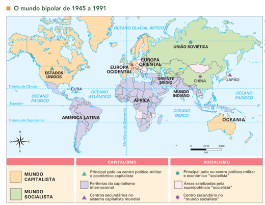
Fonte: Vesentini (2013).
Estruturas Econômicas e Políticas Divergentes
Economia: A principal distinção entre as duas superpotências residia em seus sistemas
econômicos. Os Estados Unidos promoviam um modelo capitalista de livre mercado, enquanto a União Soviética
adotava um sistema de economia planificada baseado em princípios comunistas.
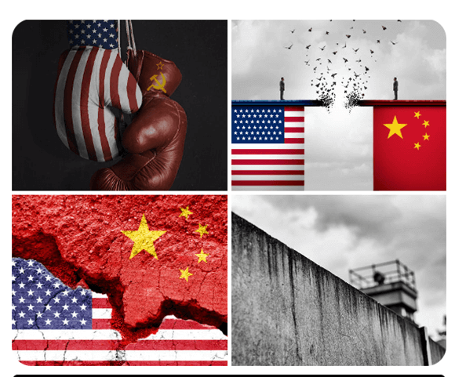
Fonte: Pexels.
Influência Política e Militar: Através da formação de alianças estratégicas como a OTAN e o
Pacto de Varsóvia, cada superpotência buscava expandir sua influência, estabelecendo esferas de influência
geopolíticas.
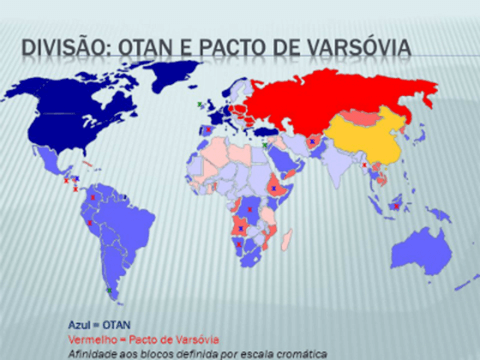
A Corrida Espacial como Metáfora de Dominação
Um dos exemplos mais emblemáticos da competição por hegemonia foi a corrida espacial, destacando-se o pouso
lunar dos Estados Unidos em 1969. Esse evento não apenas simbolizava a supremacia tecnológica americana, mas
também servia como um poderoso instrumento de propaganda.
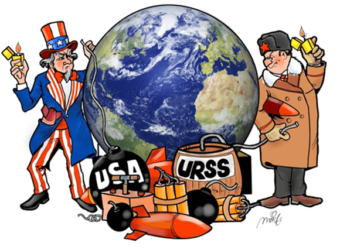
Exemplos de Impacto Global e Regional
Cuba: A Crise dos Mísseis de 1962 ilustra vividamente como nações menores se tornaram peões
no jogo estratégico das superpotências, colocando o mundo à beira de um conflito nuclear.
Alemanha: A Alemanha dividida, com a construção do Muro de Berlim, simbolizava a cisão
ideológica e física imposta pela ordem mundial bipolar, evidenciando as profundas divisões dentro da Europa
e o mundo.
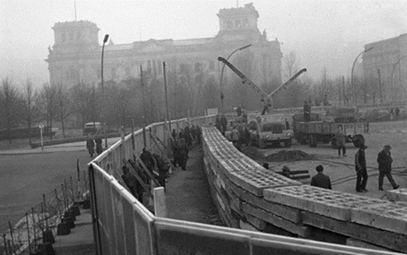
Fonte: https://g1.globo.com/mundo/noticia/html.
Análise Quantitativa: A Corrida Armamentista
A escalada armamentista é um aspecto quantificável da competição por hegemonia. Dados sobre os arsenais
nucleares evidenciam a magnitude do poderio militar acumulado:
- EUA: Cerca de 23.000 ogivas nucleares no auge da Guerra Fria.
- URSS: Aproximadamente 40.000 ogivas nucleares.
Estes números refletem a intensa competição e a permanente ameaça de escalada para um conflito nuclear,
caracterizando a era como um período de tensão e competição estratégica constante.
Teste seu conhecimento
Durante a Guerra Fria, a União Soviética adotou um sistema de economia capitalista baseado na livre
iniciativa econômica.
Descolonização e a Emergência de Novos Estados:
A descolonização, um fenômeno marcante do século XX, transformou o mapa político mundial ao permitir que
territórios na África e Ásia alcançassem independência. Este processo foi catalisado pelo enfraquecimento
das potências europeias após a Segunda Guerra Mundial e pelo desejo de autodeterminação, com países como
Índia (1947) e Gana (1957) liderando o caminho.
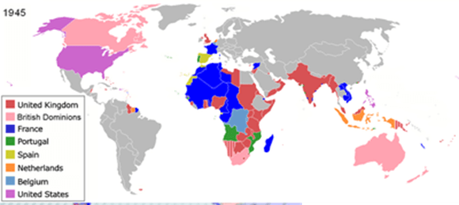
Fonte: Wikipedia.
A ascensão desses novos estados durante a Guerra Fria adicionou complexidade às relações internacionais, com
Estados Unidos e União Soviética competindo por influência. Essa era viu o nascimento do movimento de
não-alinhamento, especialmente significativo para países que buscavam uma terceira via além do confronto
Leste-Oeste.
Contudo, a descolonização também trouxe desafios, incluindo conflitos internos e dificuldades econômicas,
muitas vezes agravadas pela intromissão das superpotências. A longo prazo, esse processo contribuiu para a
emergência de um mundo mais multipolar e impulsionou o Movimento dos Países Não-Alinhados, redefinindo as
dinâmicas de poder global e promovendo uma nova consciência sobre cooperação internacional e soberania.
Teste seu conhecimento
A descolonização foi um fenômeno marcante do século XX que transformou o mapa político mundial.
Guerra Fria: Economia Planificada vs. Capitalista:
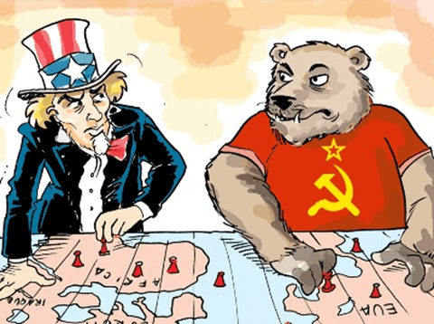
Durante grande parte do século XX, o mundo esteve dividido entre dois sistemas econômicos e políticos
diametralmente opostos: a economia planificada, representada pelo bloco soviético liderado pela União
Soviética, e a economia capitalista, representada pelo bloco ocidental liderado pelos Estados Unidos. Esses
sistemas não apenas moldaram as políticas internas de seus respectivos blocos, mas também influenciaram
profundamente as relações globais e a geopolítica da época.
Economia Planificada do Bloco Soviético
A União Soviética adotou o modelo de economia planificada, no qual o Estado detinha o controle dos meios de
produção, determinando o que seria produzido, em que quantidade e a que preço seria vendido. Esse sistema
buscava eliminar as disparidades sociais e econômicas, prometendo igualdade e justiça social para todos os
cidadãos soviéticos.
Centralização do Planejamento:
Um dos pilares da economia planificada era o planejamento centralizado. O Estado soviético elaborava planos
quinquenais que estabeleciam metas de produção para todos os setores da economia, desde a agricultura até a
indústria pesada.
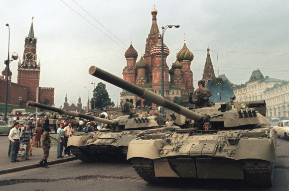
Fonte: Folha – UOL.
Propriedade Estatal dos Meios de Produção:
Sob o sistema soviético, fábricas, terras agrícolas e empresas eram propriedade do Estado. Isso significava
que não havia proprietários privados, e a produção estava voltada para o interesse coletivo.
Questão Reflexiva: Até que ponto o controle estatal sobre os meios de
produção garantiu ou restringiu a liberdade individual dos cidadãos soviéticos?
Exemplo da Economia Soviética: Indústria Pesada
Um exemplo notável da economia planificada soviética foi o foco na indústria pesada. Durante os primeiros
planos quinquenais, a URSS direcionou enormes recursos para construir uma base industrial robusta. Isso
resultou na rápida expansão da produção de aço, maquinaria e produtos químicos. No entanto, isso muitas
vezes significava a falta de bens de consumo básicos para os cidadãos comuns, levando a longas filas e
escassez de itens essenciais.
Economia Capitalista do Bloco Ocidental
Por outro lado, o bloco ocidental liderado pelos Estados Unidos adotou o sistema de economia capitalista,
baseado na propriedade privada dos meios de produção e na busca do lucro como motor da atividade econômica.
Economia de Mercado Livre:
Sob o sistema capitalista, o mercado desempenha um papel fundamental na alocação de recursos. Os preços são
determinados pela oferta e demanda, e as empresas competem umas com as outras para atrair consumidores.
Propriedade Privada e Iniciativa Individual:
Ao contrário da URSS, no sistema capitalista, as empresas são de propriedade privada, e os indivíduos têm o
direito de iniciar seus próprios negócios e buscar lucro.
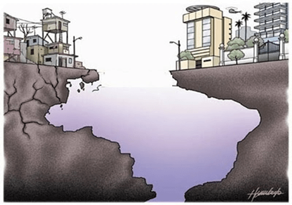
Questão Reflexiva: Como o sistema capitalista incentivou a inovação
tecnológica e o crescimento econômico, e ao mesmo tempo criou disparidades de riqueza
significativas?
Exemplo da Economia Capitalista: Silicon Valley
Um exemplo notável da economia capitalista foi o desenvolvimento do Vale do Silício nos Estados Unidos. Esta
região tornou-se um ícone da inovação tecnológica e do empreendedorismo, onde empresas como Apple, Google e
Facebook foram fundadas. O incentivo à iniciativa individual e à busca de lucro levou a avanços
significativos em áreas como tecnologia da informação e comunicação.
Blocos Político-Militares: OTAN vs. Pacto de Varsóvia
Além das diferenças econômicas, esses dois blocos também se distinguiram por suas alianças
político-militares.
OTAN (Organização do Tratado do Atlântico Norte):
Formada em 1949, a OTAN foi uma aliança militar liderada pelos Estados Unidos, Canadá e várias nações
europeias. Seu principal objetivo era conter a expansão soviética na Europa Ocidental e garantir a segurança
coletiva de seus membros.
Questão Reflexiva: Até que ponto a presença militar dos EUA na Europa
Ocidental trouxe segurança ou incerteza para os países membros da OTAN?
Pacto de Varsóvia:
Criado em 1955 em resposta à formação da OTAN, o Pacto de Varsóvia foi uma aliança militar liderada pela
União Soviética e seus países satélites do Bloco do Leste Europeu. Ele serviu como contrapeso à presença
militar ocidental na Europa e foi visto como uma garantia de segurança para os Estados do Pacto.
Questão Reflexiva: Como a formação do Pacto de Varsóvia influenciou a
política interna dos países membros e sua relação com a União Soviética?
Teste seu conhecimento
Qual foi a principal distinção entre os sistemas econômicos das superpotências durante a Guerra Fria?
Teste seu conhecimento
O que foi a OTAN durante a Guerra Fria?
Crise e Colapso do Mundo Bipolar
Esgotamento das Economias Planificadas na URSS
Ineficiência Econômica: Ao longo das décadas, a economia planificada da União Soviética começou a mostrar
sinais de séria ineficiência. A falta de mecanismos de mercado levou a uma alocação ineficiente de
recursos e a uma produção de bens de baixa qualidade.
Corrupção e Burocracia: A burocracia excessiva, a corrupção generalizada e a falta de responsabilidade
econômica contribuíram para o declínio econômico. Muitas vezes, as metas dos planos quinquenais eram
cumpridas apenas de forma superficial, sem considerar a verdadeira eficácia ou demanda do mercado.
Desafios Tecnológicos: A URSS começou a ficar para trás em termos de inovação e tecnologia em comparação
com o Ocidente. Isso impactou negativamente sua competitividade global e sua capacidade de se adaptar às
mudanças no cenário econômico mundial.
Questão Reflexiva: Em que medida a falta de flexibilidade e
adaptabilidade do sistema econômico soviético
contribuiu para seu declínio?
Colapso da União Soviética (1991)
Pressões Políticas Internas e Externas: Fatores como a perestroika (reestruturação) e
glasnost (transparência), iniciadas por Mikhail Gorbachev, abriram caminho para mudanças políticas e sociais
na União Soviética. Isso permitiu o surgimento de movimentos separatistas em várias repúblicas soviéticas.
Efeito Dominó: A queda do Muro de Berlim em 1989 e a subsequente reunificação da Alemanha
Ocidental e Oriental sinalizaram o início do fim do bloco comunista na Europa Oriental. Isso inspirou
movimentos pró-democracia em toda a região.
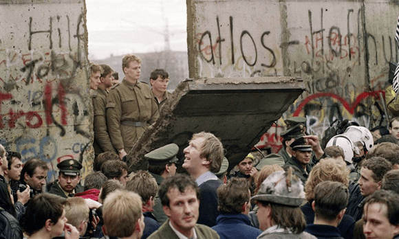
Fonte: O Globo.
Declaração da Independência: Em dezembro de 1991, as repúblicas da União Soviética
declararam sua independência, levando ao colapso oficial do país. A Rússia emergiu como seu principal
sucessor, adotando uma economia de mercado e uma democracia, embora com muitos desafios.
Questão Reflexiva: Como o colapso da União Soviética redefiniu as
relações geopolíticas e econômicas globais, e quais foram as consequências para os países do antigo
bloco
soviético?
Surgimento de Novos Polos Mundiais de Poder
Multipolaridade no Século XXI
Ascensão da China: Após o fim da Guerra Fria, a China emergiu como uma potência econômica e política global.
Seu rápido crescimento econômico, baseado em uma mistura de economia de mercado e controle estatal, a tornou
uma das maiores economias do mundo.
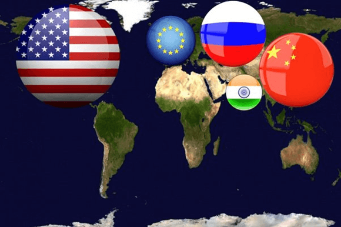
Fonte: Organizado pelo autor.
Rússia Pós-URSS: A Rússia, apesar dos desafios e dificuldades após o colapso da União Soviética, manteve seu
status como uma potência nuclear e regional. Sob o governo de Vladimir Putin, a Rússia tem buscado afirmar
sua influência em várias regiões do mundo.
Europa Unida: A União Europeia, formada inicialmente como uma aliança econômica, também emergiu como uma
potência política significativa. Sua moeda, o euro, e suas políticas comuns têm fortalecido sua posição no
cenário global.
Questão Reflexiva: Como a multipolaridade no século XXI influencia as
relações internacionais, o comércio global e os desafios geopolíticos enfrentados pelo mundo?
Não existe pergunta boba! A Ciência é feita de perguntas!
P:
Qual era a função dos abrigos nucleares durante a Guerra Fria?
R: Os abrigos nucleares eram construídos para proteger a população em caso
de ataque nuclear, oferecendo um local seguro para se abrigar contra os efeitos devastadores das explosões.
P:
Por que as pessoas costumavam estocar alimentos e suprimentos durante a Guerra Fria?
R: O estocagem de alimentos e suprimentos era comum durante a Guerra Fria
devido ao medo de uma possível guerra nuclear ou de um bloqueio econômico, garantindo que as pessoas teriam
provisões suficientes em caso de emergência.
P:
Como eram as relações diplomáticas entre os Estados Unidos e a União Soviética durante a Guerra Fria?
R: Durante a Guerra Fria, as relações entre os Estados Unidos e a União
Soviética eram marcadas por tensão e desconfiança mútua, com episódios como a Crise dos Mísseis em Cuba em
1962 demonstrando o potencial para um conflito direto.
Atividade em Grupo: Simulação de Debate Capitalista vs. Comunista
Objetivo: Explorar e compreender as diferenças entre os sistemas econômicos capitalista
e comunista, bem como desenvolver habilidades de argumentação e debate.
Divisão da Sala:
- Metade dos alunos serão designados como "Capitalistas".
- A outra metade dos alunos serão designados como "Comunistas".
Papéis dos Alunos:
Capitalistas:
Empresário: Defende a liberdade de empreendimento e o papel do mercado na alocação
eficiente de recursos.
Argumentos:
"No sistema capitalista, as empresas têm liberdade para inovar e competir, o que
leva a mais opções e produtos para os consumidores."
"A propriedade privada estimula as pessoas a trabalharem mais, sabendo que poderão
colher os benefícios de seu esforço."
Economista Capitalista: Apresenta dados e exemplos de crescimento econômico e
sucesso empresarial no sistema capitalista.
Argumentos:
"Países com economias capitalistas têm PIB per capita mais alto e uma qualidade de
vida geralmente melhor para seus cidadãos."
"O mercado livre é eficiente na alocação de recursos, respondendo às demandas dos
consumidores de forma rápida e eficaz."
Comunistas:
Trabalhador: Defende a igualdade social e os benefícios do controle estatal dos
meios de produção.
Argumentos:
"No sistema comunista, todos têm acesso aos mesmos recursos e oportunidades, o que
reduz as disparidades sociais."
"O controle estatal dos meios de produção garante que os recursos sejam utilizados
para o bem-estar de toda a sociedade, não apenas para enriquecer alguns poucos."
Ativista Social: Apresenta exemplos históricos de desigualdades reduzidas e
programas sociais bem-sucedidos em regimes comunistas.
Argumentos:
"Sob o sistema comunista, vimos avanços significativos na educação, saúde e moradia
para todos os cidadãos."
"A distribuição equitativa de recursos garante que ninguém fique para trás e que
todos tenham acesso aos bens essenciais."
Etapas da Atividade:
Introdução (10 minutos):
Explicação breve sobre os sistemas econômicos capitalista e comunista.
Distribuição dos papéis: metade dos alunos como Capitalistas e a outra metade como
Comunistas.
Preparação (15 minutos):
Cada grupo terá 15 minutos para discutir e planejar seus argumentos.
Devem usar exemplos fornecidos e criar outros argumentos para defender seus sistemas
econômicos.
Debate (30 minutos):
Os alunos começam o debate, seguindo as regras básicas de discussão.
Cada grupo terá a oportunidade de apresentar seus argumentos e responder aos pontos
levantados pelo outro grupo.
O debate será moderado para garantir que todos tenham a chance de falar.
Encerramento (10 minutos):
Conclusões finais: cada grupo terá um tempo para apresentar uma conclusão final, reforçando
seus pontos de vista.
Discussão em sala de aula: perguntas e reflexões sobre o debate, o que aprenderam e como
isso se relaciona com a história e a geopolítica.
SANTOS, Milton. A Natureza do Espaço: técnica e tempo, razão e emoção. São Paulo: EDUSP,
2002.
VESENTINI, José William. Geografia: o mundo em transição. Ensino médio. 2.
ed. – São
Paulo: Ática, 2013.
VOGLER, Christopher. A jornada do escritor: estruturas míticas para escritores.
Tradução de Ana Maria Machado. 2.ed. Rio de Janeiro: Nova Fronteira, 2006.
SKOLNICK, Evan. Video game storytelling: what every developer needs to know about
narrative techniques.New Yoirk: Watson-Guptill, 2014.